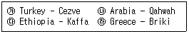
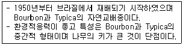
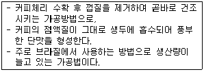
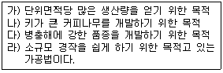
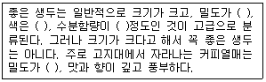
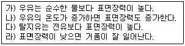
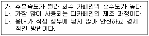
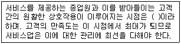
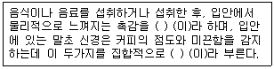
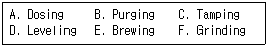

바리스타-2급 (2010-11-13 기출문제)
1과목: 커피학 개론
1. 다음 중 커피는 어디에 속하는 음료인가?
- 기호음료
- 영양음료
- 청량음료
- 유성음료
(정답률: 94%)

2. 나라에 따라 커피어원(語原)이 다르게 전해져 왔는데, 다음 내용 중 그 연결이 옳게 짝지어진 것은 어느 것인가?

- 가, 나
- 나, 다
- 가, 다
- 나, 라
(정답률: 74%)
3. 커피에 관한 식물학적 내용 중 옳은 것은 ?
- 커피나무는 꼭두서니과(Rubiaceae)에 속하는 상록수로, 남아메리카 브라질이 원산지이다.
- 아라비카 종은 평균 3%, 로부스타 종은 약 1%의 카페인을 함유하고 있다.
- 로부스타 종의 경우 연평균 강우량 2,000-3,000mm의 규칙적인 비와 충분한 햇볕을 받아야 한다.
- 꽃잎은 아라비카 종 4장, 로부스타 종 5장, 리베리카 종 7장인데, 꽃이 핀 지 2-3일이면 져버린다.
(정답률: 61%)
4. 주로 고지대에서 재배되며 기후조건에 영향을 많이 받아 재배가 까다로운 반면에 맛과 향이 뛰어나 종자개량과 연구가 활발하게 이루어지고 있으며 세계 커피생산량의 60-70%를 차지하는 커피 품종은 무엇인가?
- 아라비카 종
- 로부스타 종
- 리베리카 종
- 카네포라 종
(정답률: 85%)
5. 아라비카 종 커피의 특징에 대한 설명에 해당되지 않는 것은?
- 대체로 풍부한 신맛과 고급스런 향을 지녔다.
- 해발 800-2,000m의 고산지대에서 재배된다.
- 가격이 저렴하며 인스턴트커피의 제조에 주로 이용된다.
- 카리브 해, 중남미, 동아프리카 등지에서 생산된다.
(정답률: 79%)
6. 아라비카와 로부스타를 비교 설명한 내용 중 사실과 다른 것은?
- 아라비카 종 커피에 비해 로부스타 커피는 체리 숙성 기간이 더 짧다.
- 아라비카 종 커피에 비해 로부스타 커피는 일반적으로 바디(Body)가 더 강하다.
- 아라비카 종 커피에 비해 로부스타 커피는 카페인 함량이 더 많다.
- 아라비카 종 커피에 비해 로부스타 커피는 병충해에 대한 내성이 더 강하다.
(정답률: 42%)
7. 아라비카 종의 적당한 재배조건이 아닌 것은?
- 연 평균 기온이 20℃ 정도이고, 연 강수량이 1,500-1,800㎜의 범위이다.
- 유기질이 풍부한 화산성 토양이 적당하다.
- 동쪽이나 동남쪽 방향으로 약간의 경사가 있는 곳이 적당하다.
- 저위도 지역이나, 고위도 지역이나 표고가 높을수록 재배에 적합하다.
(정답률: 49%)
8. 다음에 설명하는 커피는?

- 카투라(Caturra)
- 켄트(Cent)
- 문도노보(Mundo Novo)
- 카티모르(Catimor)
(정답률: 54%)
9. 아프리카 동부에 위치한 레위니옹(Reunion) 섬에서 발견된 티피카(Typica)의 돌연변이 품종은?
- 카투아이(Catuai)
- 버번(Bourbon)
- 수마트라(Sumatra)
- 문도노보(Mundo Novo)
(정답률: 69%)
10. 생두의 가운데 골처럼 파인 부분을 무엇이라 하나?
- 과육(Pulp)
- 외피(Outer skin)
- 파치먼트(Parchment)
- 센터 컷(Center cut)
(정답률: 83%)
11. 다음 중 커피 체리가 성숙하면서 노란색으로 변하는 품종은?
- 카로시
- 아마레로
- 토라자
- 수프레모
(정답률: 56%)
12. 그늘 경작법(Shading)에 대한 설명 중 틀린 것은?
- 이 경작 방법으로 생산된 원두를 ‘셰이드 그로운 커피(Shade-grown coffee)’라고 한다.
- 키 큰 나무의 그늘을 이용하여 커피나무의 일조시간을 줄여줌으로써 생두의 밀도를 높여준다.
- 커피나무에 그늘을 만들어 주기 위해 심는 나무를 셰이드 트리(Shade tree)라고 한다.
- 잎이 넓은 나무를 심어 햇빛을 완전히 차단하는 방법이다.
(정답률: 70%)
13. 다음 설명 중 옳은 것은?
- 몬순커피로 유명한 것으로 인도의 Malabar AA가 있다.
- 롱베리(Longberry)는 기형 생두의 일종이며 체리 속에 생두가 한 개밖에 없다.
- 피베리(Peaberry)는 그해 생산된 생두를 지칭한다.
- 패스트 크롭(Past crop)은 수확한 지 3년 이상 된 생두를 말한다.
(정답률: 68%)
14. 다음의 커피체리에 관한 내용 중 틀린 것은?
- 성숙한 커피 열매는 색이나 형태가 체리와 비슷해서 ‘Cherry', 혹은 ’Coffee cherry'라고 불린다.
- 일반적으로 체리의 껍질 안쪽에 과육이 있고, 과육 안쪽으로 속껍질 안에 두 개의 생두가 들어있다.
- 커피 생두는 한 체리에 보통 두 개가 서로 마주보는 형태로 들어있지만 간혹 세 개 이상 들어있는 경우도 있다.
- 가지 끝에 열리는 체리에는 생두가 하나만 들어 있는 경우도 있는데, 이런 체리를 피베리(Peaberry)라고 부른다.
(정답률: 66%)
15. 아래에서 설명하는 생두 가공과정을 거쳐 얻은 커피는 어떤 종류인가?

- 세미 워시드 커피(Semi-washed)
- 내추럴 커피(Natural)
- 펄프드 내추럴 커피(Pulped-natural)
- 워시드 커피(Washed)
(정답률: 68%)
16. 커피 생두의 등급(Grading)을 정하기 위해 되어야 할 조건이 아닌 것은?
- 크기
- 밀도
- 수분함량
- 수확시기
(정답률: 63%)
17. 워시드 커피(Washed coffee)의 처리방법으로 옳은 것은?
- Pulping→Washing→Fermentation→Drying→Hulling→Cleaning→Grading
- Pulping→Washing→Fermentation→Drying→Hulling→Grading→Cleaning
- Pulping→Fermentation→Washing→Drying→Hulling→Cleaning→Grading
- Pulping→Fermentation→Washing→Drying→Hulling→Grading→Cleaning
(정답률: 62%)
18. 생두의 가공법 중에 건식법(Dry processing)에 대한 설명으로 옳은 것은?
- 습식법에 비해 좋은 품질의 커피를 생산할 수 있다.
- 수확 - 이물질 제거 - 건조의 순으로 가공된다.
- 커피체리에서 분리된 생두를 건조하는 방법이다.
- 건식법으로 생산된 커피를 마일드 커피(Mild coffee)라 부른다.
(정답률: 66%)
19. 다음 습식법(Wet Processing)에 대한 설명 중 옳은 것은?
- 건식법에 비해 커피의 품질이 떨어진다.
- 주로 로부스타 종에 많이 사용된다.
- 단맛이 좋으며 바디가 비교적 강한 커피를 얻을 수 있다.
- 세균에 의한 발효로 Acetic acid, Lactic acid등이 생성되어 pH가 3.8~4.0으로 저하된다.
(정답률: 67%)
20. 커피의 대표적 생산지 중 하나인 과테말라에 대한 설명이다. 틀린 것은?
- 초콜릿 향이 나는 모카(Mocha)커피가 유명하다.
- 수출의 70% 정도를 커피가 차지한 때도 있었다.
- 재배지의 고도에 따라 등급을 나누는데 SHB가 최상급이다.
- 인구의 25% 정도가 커피산업에 종사하고 있다.
(정답률: 50%)
21. 커피종자를 개량하는 목적으로 옳게 묶은 것은?

- 가, 나
- 나, 다
- 다, 라
- 가, 다
(정답률: 64%)
22. 다음의 샘플 중 SCAA의 "스페셜티 커피(Specialty coffee) 분류기준"에 의한 스페셜티 그레이드(Specialty grade)에 해당되는 커피는?
- 결점두가 한 개도 없으나 퀘이커(Quaker)가 2개 발견된 샘플
- 미성숙두(Unripe)가 5개, 플로터(Floater)가 5개가 발견된 샘플
- 쉘(Shell)이 5개, 마른 체리(Dried cherry)가 한 개 발견된 샘플
- 돌이 2개 발견된 샘플
(정답률: 31%)
23. 정상 생두에 포함된 결점두에 대한 다음 정보 중 옳지 않은 것은?
- 외부물질인 돌, 나뭇가지 등은 결점두에 속하지 않는다.
- 벌레가 먹거나, 부서져 모양이 불규칙한 생두이다.
- 검은 색, 갈색, 덜 성숙한 듯한 녹색 등으로 색깔이 불규칙한 생두이다.
- 향미에 가장 큰 영향을 미치고, 뉴욕거래소의 NY 등급 기준으로 가장 점수가 높은 결점두에는 black bean 및 sour bean 등이 있다.
(정답률: 48%)
24. SCAA 분류법 중 Specialty Grade의 등급기준에 해당하지 않는 것은?
- 350g 안에 결점수(Full defect)가 5이내이며 프라이머리 디펙트(Primary defect)는 허용되지 않는다.
- 퀘이커(Quaker)는 로스팅 된 커피 100g 중 3개까지 허용된다.
- 생두의 허용 수분함량은 10-13% 이내이다.
- Body, Flavor, Aroma, Acidity 등의 특성을 가지고 있어야 한다.
(정답률: 70%)
25. 좋은 생두의 조건을 나열하면 다음과 같다. ( ) 안에 들어갈 옳은 내용은?

- 낮으며, 어두운 갈색, 12%, 낮으며
- 높으며, 어두운 갈색, 30%, 낮으며
- 높으며, 밝은 청록색, 12%, 높으며
- 낮으며, 밝은 청록색, 12%, 낮으며
(정답률: 73%)
26. 우유의 표면장력을 설명한 것이다. 옳은 내용으로 연결된 것은?

- 가, 나
- 가, 라
- 나, 다
- 다, 라
(정답률: 46%)
27. 다음 중 커피가 인체에 미치는 영향이 아닌 것은?
- 심장 박동 수를 감소시켜 진정의 효과를 나타낸다.
- 중추신경계를 자극하여 정신을 맑게 한다.
- 이뇨제의 역할을 하여 소변의 양을 증가시킨다.
- 위를 자극하여 위액의 분비를 촉진시킨다.
(정답률: 76%)
28. 우유를 마시면 소화가 잘 되지 않아서 속이 거북해지는 현상을 유당불내증이라고 한다. 유당불내증에 대한 설명 중 틀린 것은?
- 유당불내증은 대개 유전적 현상이다.
- 한국인의 대부분은 중학교 고학년이 되면 유당불내증이 나타나는 후천성 유당불내증 현상을 보인다.
- 한국인은 우유를 잘 소화시키지 못하는 경향이 많다.
- 백인이나 동양인보다 아프리카인이 우유를 더 잘 소화한다.
(정답률: 54%)
29. 다음은 디카페인 커피의 제조과정을 설명한 내용인데, 어떤 종류의 추출법을 설명한 것인가?

- 초임계 추출법
- 증류 추출법
- 물 추출법
- 용매 추출법
(정답률: 58%)
30. 아래의 내용 ( ) 안에 적합한 용어는 무엇인가?

- 서비스 기대점
- 서비스 접점
- 서비스 순환점
- 서비스 시발점
(정답률: 70%)
2과목: 로스팅과 향미 평가(커피 배전)
31. 커피를 로스팅 하는 이유로 타당하지 않은 것은?
- 커피의 맛과 향을 얻기 위하여
- 오래 보관하기 위하여
- 커피추출을 쉽게 하기 위해서
- 커피의 독특한 색을 얻기 위해서
(정답률: 71%)
32. 커피를 볶을 때 기본적인 세 가지 단계에 속하지 않는 것은?
- 건조(Dry)
- 열분해(Pyrolysis)
- 냉각(Cooling)
- 포장(Packing)
(정답률: 76%)
33. 커피 로스팅 시 일어나는 물리적 현상으로 옳지 않은 것은?
- 원두 부피의 지속적 감소
- 수분이 증발하고 팽창되면서 크랙이 발생
- 커피 조직이 다공질화하면서 추출 조건이 좋아짐.
- 온도의 상승으로 원두와 실버스킨의 분리
(정답률: 65%)
34. 로스팅의 8단계 분류 중 프렌치로스트(French roast)에 해당하는 SCAA 구분 명칭은?
- Medium roast
- Moderately dark roast
- Dark roast
- Very dark roast
(정답률: 57%)
35. 로스팅 된 원두의 쓴맛 중 10% 정도를 차지하는 것은?
- 카페인
- 유기산
- 트리고넬린
- 퀴닌산
(정답률: 69%)
36. 커피를 로스팅할 때 일어나는 성분의 양적 변화 중 다른 하나는?
- Caffeine(카페인)
- Trigonelline(트리고넬린)
- Chlorogenic acid(클로로젠 산)
- Free sugar(당류)
(정답률: 50%)
37. 생두를 로스팅을 함으로써 가장 현저하게 감소되는 물질은?
- 지질
- 카페인
- 섬유소
- 자당
(정답률: 54%)
38. 마이야르 반응(Maillard reaction)에 대한 설명 중 가장 적합한 내용은?
- 효소적 갈변화 반응이다
- 멜라노이딘이 형성되어 갈색을 띠게 되는 반응이다.
- 캐러멜화(Caramelization)라고도 한다.
- 탄수화물을 가열하면 일어나는 반응이다.
(정답률: 59%)
39. 커피생두의 로스팅에 의하여 열분해 되어 로스팅으로 인한 플레이버(Flavor)와 비타민인 Niacin이 생성되는 것으로 알려져 있는 성분은?
- Cafestol
- Chlorogenic acid류
- Trigonelline
- Caffeine
(정답률: 43%)
40. 생두의 화학성분 중에 산화적 스트레스 예방 및 유해 산소류 제거능력 등의 항산화 효능을 보유한 성분으로 옳은 것은?
- 아세트 산(acetic acid)
- 글루탐산(glutamic acid)
- 클로로젠산(chlorogenic acid)
- 옥살산(oxalic acid)
(정답률: 61%)
41. 다음은 향기에 대한 원칙이다. 틀린 것은?
- 향기는 기체 상태로만 느낄 수 있다.
- 커피 향기의 분자량에 따른 특징은 일반적으로 분자량이 작을수록 날카롭고 거칠게 느껴진다.
- 커피의 향기는 원인요소에 따른 특징과 분자량에 따른 특징에 의한 이중 구조로 파악할 수 있다.
- 향기에 대한 판단은 일반적으로 경험이나 훈련에 의해 쌓인 기억에 의존한다.
(정답률: 41%)
42. 커피 향기의 생성 원리에 의한 분류로 적합하지 않은 것은?
- 효소작용
- 갈변반응
- 건열반응
- 중합반응
(정답률: 48%)
43. 효소작용에 의해 생성된 향기가 아닌 것은
- 야채 향기
- 과일 향기
- 캔디 향기
- 꽃향기
(정답률: 51%)
44. 갈변반응에 의해서 나타나는 향기는?
- 두류향기
- 물엿향기
- 감귤향기
- 딸기향기
(정답률: 60%)
45. 다음에 설명에서 ( ) 안에 들어간 단어를 바르게 연결한 것은?

- Mouthfeel, Body
- Mouthfeel, Flaver
- Aftertaste, Mouthfeel
- Flaver, Aftertaste
(정답률: 67%)
3과목: 커피 추출
46. 커피를 추출할 때 주의해야 할 점 등에 대해 바르게 설명하지 못한 것은 어느 것 인가?
- 커피를 추출할 때 물의 온도는 일반적으로 로스팅의 정도에 따라 다르게 적용하여 추출하여야 한다.
- 커피를 추출할 때 커피의 분쇄 크기는 추출 시간, 즉 맛에 직접적으로 영향을 미치므로 추구하는 맛에 따라 다르게 분쇄한다.
- 커피를 추출할 때 가장 중요하게 생각해야 할 부분은 추출 원리상 투과식인지 혹은 침출식인지를 고려해야 한다.
- 커피를 추출하기 위해서는 가장 먼저 커피의 상태를 살펴야 한다.
(정답률: 41%)
47. 커피 추출에 사용하는 물의 조건은 다양할 수 있다. 다음 중 추출에 관여하는 물의 조건으로 반드시 고려하지는 않아도 되는 것은?
- 주전자의 재질
- 사용할 온도
- 추출에 걸리는 시간
- 추출액량
(정답률: 72%)
48. 다음 원두 저장 중 수분의 영향에 대한 설명으로 적절한 것은?
- 원두가 수분을 흡수하면 맛 성분의 산화가 촉진된다.
- 상온에서 저장할 경우 상대습도 50% 일 때 3-4일 후 부터 산패가 일어난다.
- 원두에 흡착하는 수분은 커피의 탄산가스를 방출시켜서 맛 성분의 산화를 촉진한다.
- 상온에서는 상대습도가 0% 이더라도 3-4주 후부터 산패가 일어난다.
(정답률: 30%)
49. 다음 중 원두의 산패가 가장 빠르게 진행되는 것은 ?
- 밀폐되지 않고 개봉된 원두
- 미리 갈아놓은 원두
- 원웨이 밸브(Oneway-valve)가 없이 포장된 원두
- 호퍼 안에 들어있는 원두
(정답률: 61%)
50. 원두를 포장할 때 사용되지 않는 방법은 ?
- 진공 포장 법
- 산소 가압 포장 법
- 불활성 가스 포장 법
- 밸브 포장 법
(정답률: 56%)
51. 물과 비교한 에스프레소 추출액의 물리화학적 차이이다. 틀린 것은?
- 굴절률이 증가한다.
- 표면 장력이 증가한다.
- 전기 전도도가 높아진다.
- pH가 낮아진다.
(정답률: 43%)
52. 에스프레소 커피의 특징을 나열한 것 중 잘못 기술된 것은?
- 에스프레소 커피는 ‘빠르게 추출하는 커피’로 express가 어원이다.
- 분쇄된 커피에 중력의 9배를 가하므로 수용성 성분과 함께 지용성 성분까지 추출해 내는 가압투과식 추출법이다.
- 에스프레소 커피의 일반적인 원두량은 한 잔당 7-8g 정도로 포터 필터의 사이즈에 따라 적정량이 조금씩 달라질 수 있다.
- 이태리에서 탄생된 에스프레소는 당연히 그 로스팅 정도를 Italian Roasting Grade로 해야 한다.
(정답률: 61%)
53. 가동 중인 기계의 포터필터(필터홀더) 보관 방법 중 적당한 것은?
- 그룹에 장착한 상태로 보관한다.
- 기계 위에 올려놓는다.
- 컵 받침대에 둔다.
- 깨끗한 테이블 위에 올려놓는다.
(정답률: 71%)
54. 다음 중 커피기계에서 보일러와 연관이 없는 것은?
- 수위 감지기
- 압력 조절 장치
- 플로우미터
- 히터
(정답률: 54%)
55. 지하수를 에스프레소 기계에 직접 연결해 사용하려고 한다. 이때 다음 중 기계에 치명적인 무기질은?
- 철
- 칼슘
- 인
- 납
(정답률: 42%)
56. 에스프레소 추출 전 ‘물 흘려보내기’ 동작에 대한 내용이다. 틀린 것은?
- 그룹 헤드에 남아있을 수 있는 찌꺼기를 제거하기 위한 동작이다.
- 머신의 정상 작동여부를 확인하는 동작이다.
- 과열되어 있을 수 있는 추출수를 제거하기 위한 동작이다.
- 드립 트레이(Drip Tray)를 씻어내 잔 밑 부분의 청결을 유지하기 위한 동작이다.
(정답률: 69%)
57. 추출된 에스프레소의 평가 시 관능적(Sensory)평가에 대한 잘못된 설명은?
- 크레마의 컬러는 붉은색이 감도는 갈색이 좋다.
- 크레마는 지속력과 복원력이 높을수록 좋다고 평가한다.
- 신맛, 쓴맛 그리고 짠맛이 균형 잡힌 에스프레소를 훌륭하다고 평가한다.
- 바디(Body)가 강할수록 훌륭한 쪽으로 평가한다.
(정답률: 41%)
58. 다음은 에스프레소에 관련된 용어들이다. 바르게 설명된 것은?
- 룽고(Lungo) : 에스프레소보다 추출시간을 길게 하여 1oz 보다 양이 많게 추출된 에스프레소이다.
- 데미타세(Demitasse) : 시간을 짧게 하여 쓴맛을 더 강조한 에스프레소이다.
- 리스트레또(Ristretto) : 시간을 길게 하여 추출한 쓴맛을 더 강조한 에스프레소이다.
- 도피오(Doppio) : 한입에 들이킬 정도로 ‘작은 잔의 커피’라는 뜻의 프랑스 용어이다.
(정답률: 63%)
59. 에스프레소 추출 과정으로 가장 적절한 순서는 어느 것인가?

- F-D-B-C-A-E
- F-D-C-A-B-E
- F-A-C-B-D-E
- F-A-D-C-B-E
(정답률: 44%)
60. 에스프레소의 정상 추출로 보기 힘든 것은 무엇인가 ?
- 커피 색깔은 검은 갈색(Dark brown)을 띤다.
- 커피의 유속이 처음부터 끝까지 일정하게 거의 수직으로 추출된다.
- 부드러운 크레마가 3~5mm 정도 표면에 형성된다.
- 약 25초 정도에 플레이버가 풍부한 25~30ml의 커피액이 추출된다.
(정답률: 43%)